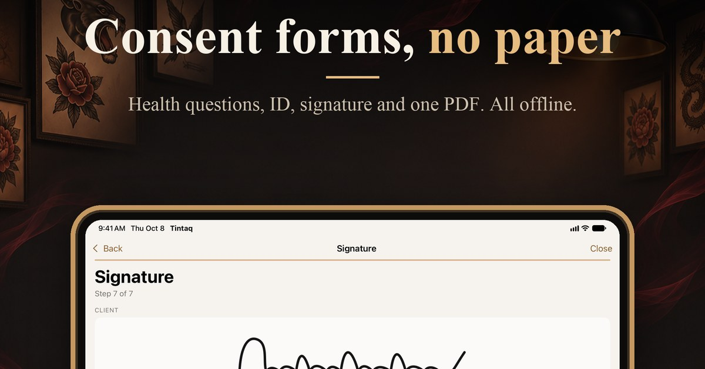
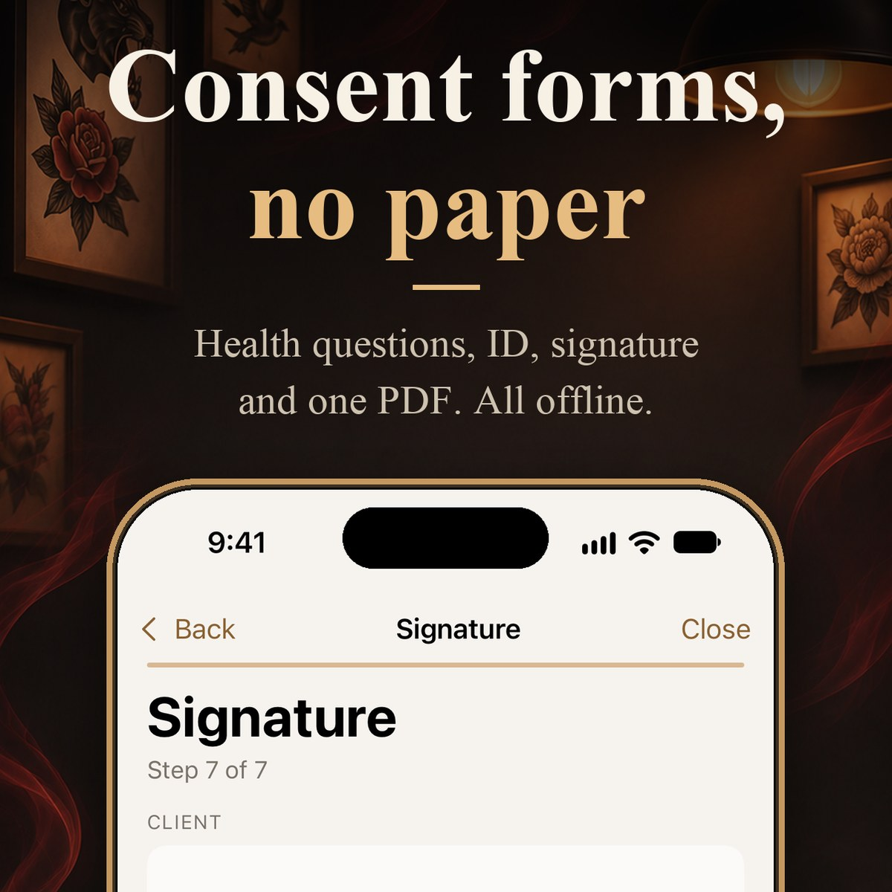
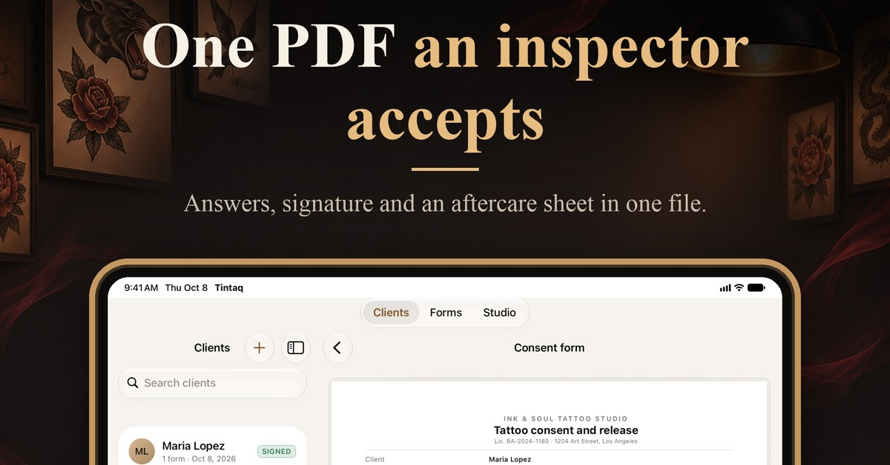
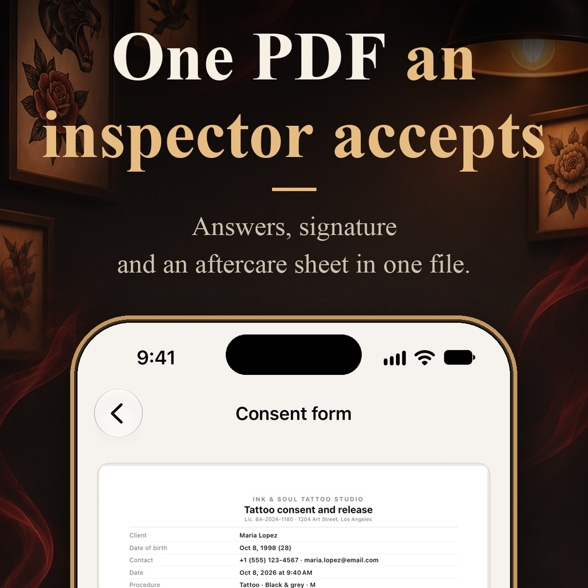
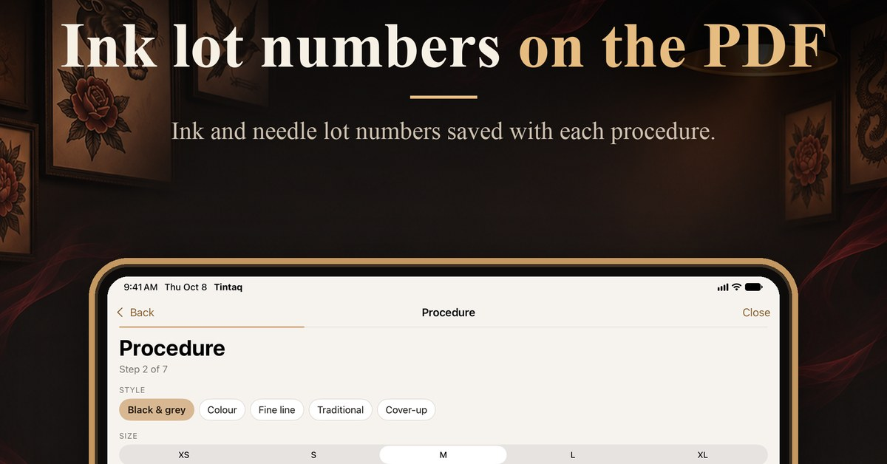
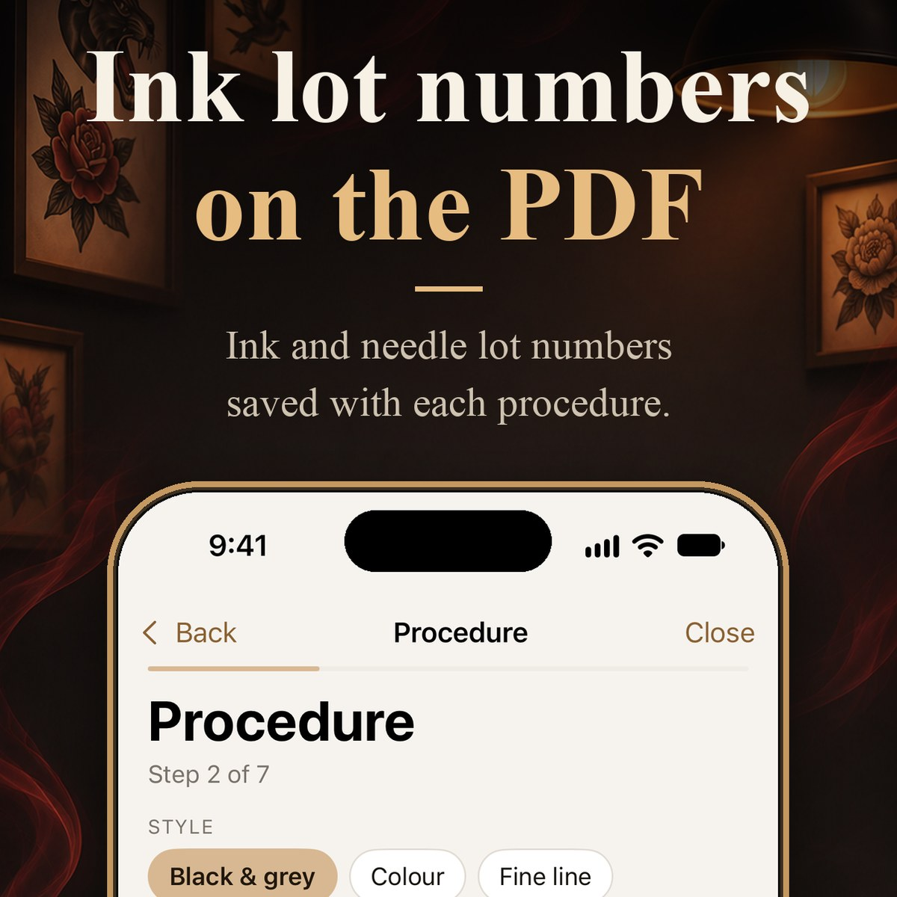
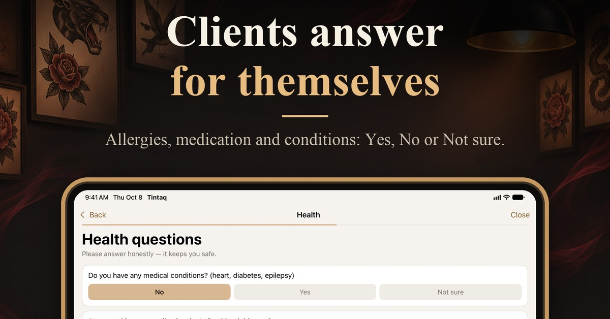
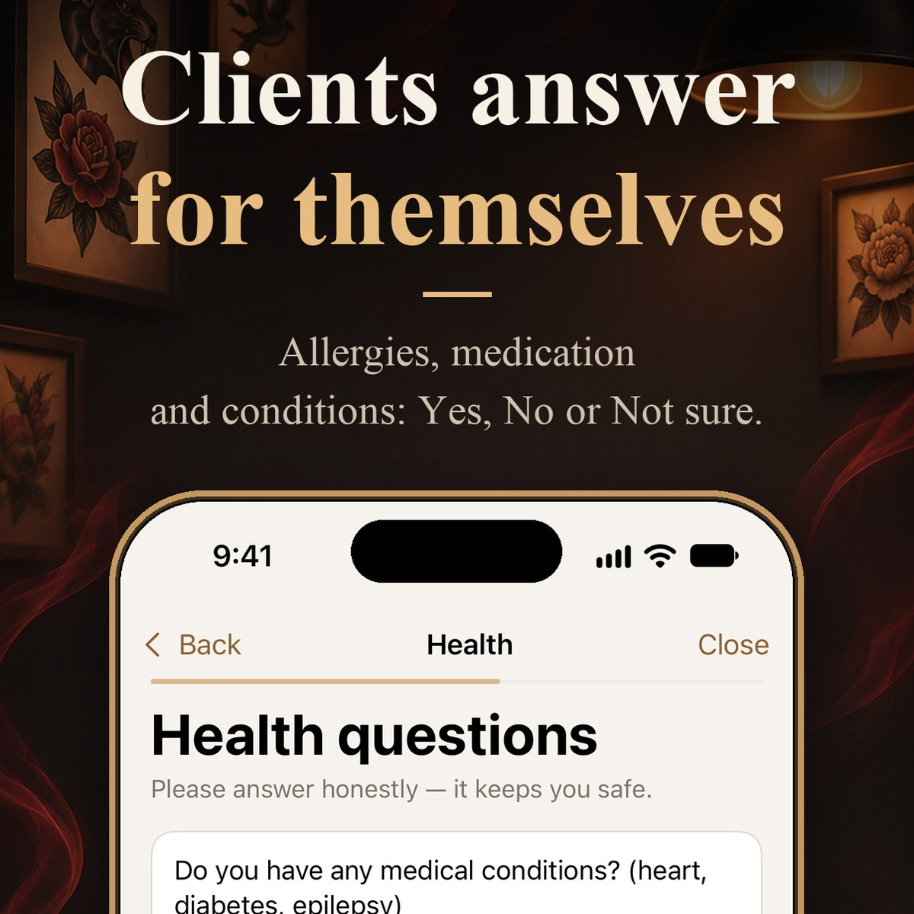
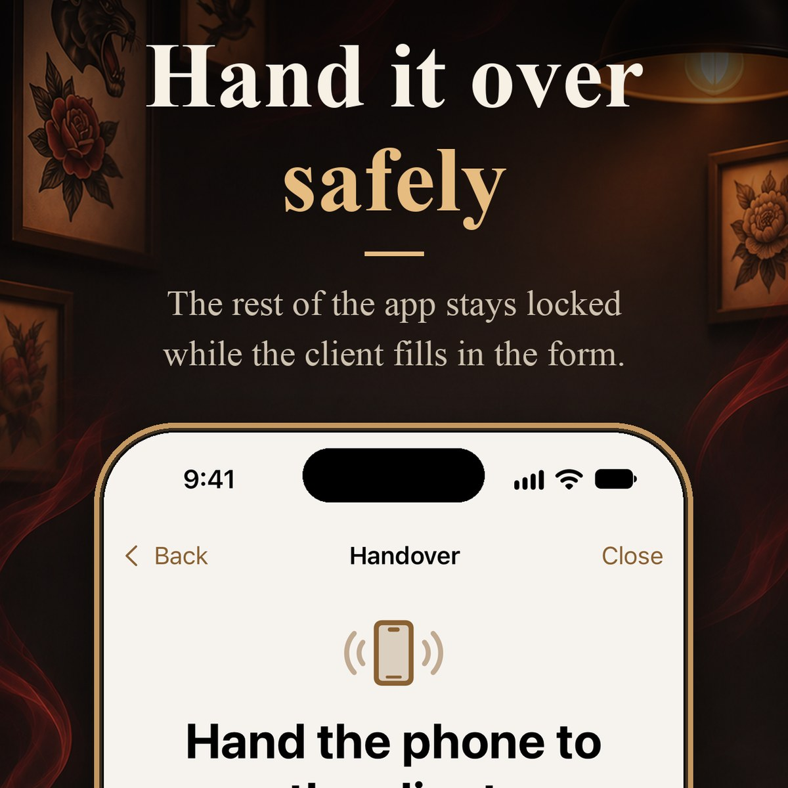

For tattoo and piercing studios
Consent forms that never leave your phone
The client answers the health questions, shows an ID and signs with a finger. Tintaq turns it into one PDF — the document an inspector asks for and the copy the client takes home.
Download on the App StoreFor iPhone and iPad. Five clients free.









Client data stays on the phone
Health answers and ID photos stay in the app, encrypted by iOS, behind Face ID. There is no account to create and no server holding your clients' records. It works with no signal.
Send the form ahead
Share a link or show a QR code, and the client fills in their details and health answers on their own phone before the visit. The answers come back as a link or a QR code on their screen — no account, no server in between. The signature stays at the studio.
Lot numbers on the document
Ink and needle batches go on the PDF, because that is the first thing a health inspector asks for.